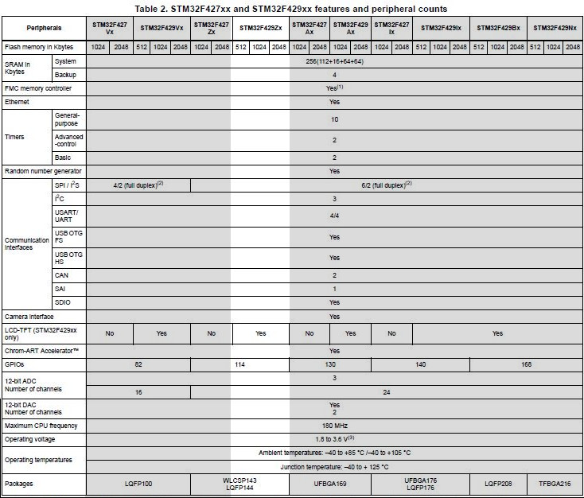

NUCLEO board *¶
- Auteur
J.Soranzo
- Date
Mars 2020
- Societe
VoLAB
- Entity
VoRoBoTics
Sommaire
Présentation¶
3 type de cartes 32, 64, 144 : fonction de la taille du boîtier du composant utiliés!
LQFP64 package, LQFP144 package
Carte NUCLEO-F401RE¶
Chip: STM32F401RE (R = 64pin package, E = 512k FLASH)

Carte NUCLEO64
Prix indicatif : 13€ NUCLEO-F401RE chez MOUSER 4
Carte NUCLEO-F429ZI¶
Chip: STM32F429ZI (Z = 144pin package, I = 2048k FLASH)
32b Arm® Cortex®-M4 MCU+FPU, 225DMIPS, up to 2MB Flash/256+4KB RAM, USB OTG HS/FS, Ethernet, 17 TIMs, 3 ADCs, 20 com. interfaces, camera & LCD-TFT
{kind=link}
Carte NUCLE144
Prix indicatif : 26€ NUCLEO-F429ZI chez MOUSER 3
Outils de développement¶
STM32 workbench développé par ACSYSY ou AC6. Dans la litérature ST cette suite logiciel se nome SW4STM32. Il en est question sur la page officiielle SW4STM32 5 qui renvoie vers la page openstm32 6
Cet outil est basé sur Eclipse. Je ne suis pas fan. Je trouve que tout cela est très lourd ! Mais comme ces petits microcontroleurs ont l’air plein de potentiel, je fais l’effort…
System Worbench for STM32 : vers qui faut-il se trouner pour avoir de l’aide ?
Eclipse, Acsys ou ST ? ou peut-ête vers le site openstm32.org 6 (ce qui reviens à peut près au même que AC6)
Exemple la commande Format du menu Source !
Mes manips¶
Décembre 2015, journal de manip en version OpenOffice, aidé du livre de Carmine Noviello 7
Dans son livre Carmine porpose d’installer un chaine de développement basée sur Eclipse et GCC et s’en explique…
Installation des outils:
Install dans c:\STM32Toolchaine comme décrit dans le livre pour ne pas être emmerdé
dans un premier temps.
Dézippe versin 64bits => une ereur à propos des plug in
dl java mais passage de la page it à fr.
Premier lancement d'Eclipse => error java
installjava => toujours la même erreur.
Recommencer avec version 32 bits, ça marche.
Install ECLIPSE + Plugin : OK
Install GCC-arm avec le conseil sur le PATH suivi.
Install Build Tools :
Dl version 32 bits
Installation sans problème
openocd : pas d'install, juste un unzip et un rennommage
ST Tools
STM32CubeMX => ok
ST-LINK Utility => ok
Install Nucleo drivers: dl sous forme de zip, renommage du fichier en NucleoDriver.zip
Upgrade ST-LINK firmware OK
Temps pour installer tout ça 3 heures
Next stage hello word
à suivre...
Manip micro Python cf journal au 25/12/2015 (à récupérer pour mettre ici)
Et STM32duino 8 ?
FreeRTOS sur NUCLEO¶
Voir dans: FreeRTOS on STM32 NUCLEO
Tips¶
ctrl+space dans l’editeur de STM32Workbench pour le code complétion
Doxygen support¶
Visiblement c’est pas la préocupation principal. On peut activer le support de doxygen dans Preference/Editor Documentation Tolls Comment (liste déroulante)
Sur les forum on trouve une référence à /** suivit de return qui produirait automatiqument un bloc de commentaire pour une fonction. Je n’ai jamais réussi à le faire fonctionné.
- Je me suis créé des template qui commencent tous par doxy comme cela dans l’éditeur je tape doxy
suivit de ctrl+SPACE et j’ai ma liste de template.
NULCEO-F401 doesn’t start in stand alone mode¶
I have a board with ST-LINK v2.J23 firmware and board doesn’t start in stan alone mode (ie not connect to a computer) powered by a battery pack for example.
I triy a lots of internet search, a lots of test and nothing work.
I update de ST-LINK firmware to v2.J34 and it’s work.
How to : install STM32 ST Link utility and use ST-LINK/Firmware update.

It open a STLink upgrade dialog